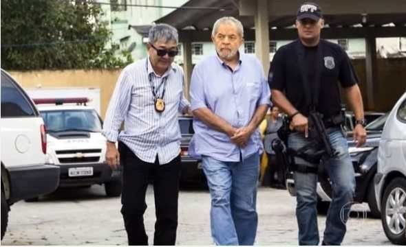
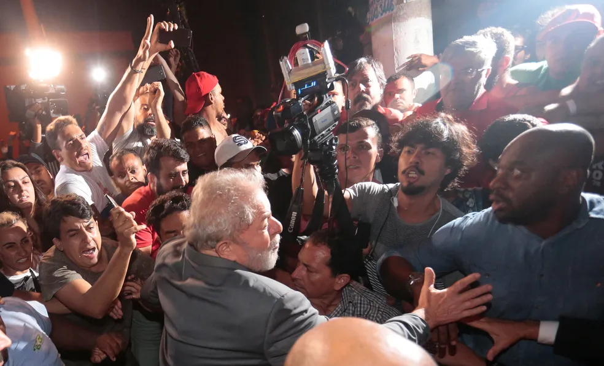
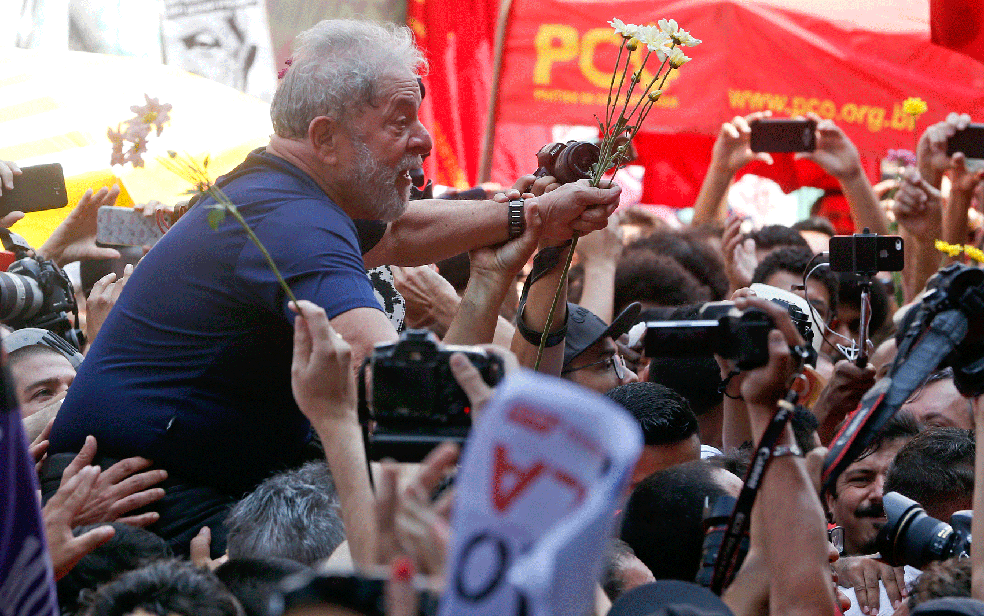
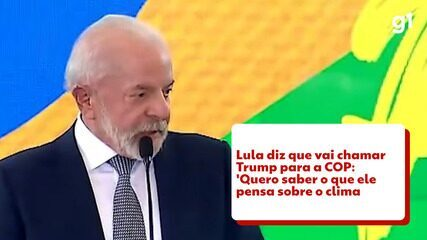

Ex-presidente Lula se entrega à PF e é preso para cumprir pena por corrupção e lavagem de dinheiro
O ex-presidente Luiz Inácio Lula da Silva (PT) se entregou à Polícia Federal (PF) e foi preso na noite deste sábado (7), após ficar dois dias na sede do Sindicato dos Metalúrgicos do ABC, em São Bernardo do Campo. Ele estava no edifício no Centro da cidade do ABC desde quinta-feira (5), quando o juiz Sérgio Moro expediu mandado de prisão.
O ex-presidente saiu a pé da sede do sindicato às 18h42 e caminhou até um prédio próximo, onde equipes da PF o aguardavam. Ele entrou no carro da PF às 18h47. A saída teve de ser feita dessa maneira porque, às 17h, Lula tentou sair de carro, mas foi impedido pela militância.

Discurso de Lula momentos antes da prisão
O comboio seguiu por vias de São Bernardo e de São Paulo até a Superintendência da PF, na Lapa, Zona Oeste, onde chegou às 19h44. Manifestantes a favor e contra a prisão o aguardavam. Os veículos entraram normalmente.
Manifestantes a favor da prisão correram em direção ao carro onde o ex-presidente estava e o xingaram. Depois que o comboio entrou, os grupos pró e contra prisão trocaram ofensas e empurrões.
De acordo com a PF, Lula foi atendido por médicos do Instituto Médico-Legal de São Paulo, que realizaram o exame de corpo de delito. Às 20h05, o ex-presidente entrou num helicóptero da Polícia Militar que seguiu em direção ao Aeroporto de Congonhas, na Zona Sul. A aeronave pousou às 20h22.
Ele entrou num avião monomotor turboélice, prefixo PR-AAC, pertencente à própria PF. A aeronave de pequeno porte com Lula decolou às 20h46 e chegou a Curitiba às 22h01.
Após a decolagem, manifestantes contrários à prisão e que aguardavam a chegada de Lula em frente ao portão do setor de autoridades de Congonhas bloquearam a pista sentido bairro do Corredor Norte-Sul. Policiais militares da Força Tática usaram bomba de efeito moral para dispersar o grupo. Um homem foi detido.
Tentativa de saída
Na primeira tentativa de sair do sindicato, Lula retornou para o interior do prédio ao ser impedido por militantes de sair com seu carro.
Após mais de uma hora, a presidente do PT, senadora Gleisi Hoffman, subiu em um carro de som e disse para a militância que a PF havia dado meia hora para que eles resolvessem a situação. Ela acrescentou que, se não fosse resolvida, "é Lula que vai sofrer a consequência".
“Quando Lula tomou a decisão, ele tomou a decisão baseada em uma situação. A resistência nós podemos fazer. Mas a leitura que fazemos aqui não é a nossa resistência, mas é a resistência dele”, disse.
Condenação
Lula foi condenado em duas instâncias da Justiça no caso do triplex em Guarujá (SP). A pena definida pela 8ª Turma do Tribunal Regional Federal da 4ª Região (TRF-4) é de 12 anos e 1 mês de prisão, com início em regime fechado, por corrupção passiva e lavagem de dinheiro (saiba mais sobre a condenação de Lula).
Por volta das 12h, Lula discursou por 55 minutos durante ato religioso em homenagem a ex-primeira-dama Marisa Letícia, que completaria 68 anos neste sábado e afirmou que não iria “correr” e “nem se esconder”. O ex-presidente também criticou as decisões do judiciário.
"Não pensem que eu sou contra a Lava Jato, não... a Lava jato, se pegar bandido, tem que pegar bandido mesmo que roubou, e prender. Todos nós queremos isso. Todos nós, a vida inteira, dizíamos: 'só prende pobre, não prende rico'. 'Todos nós dizíamos. E eu quero que continue prendendo rico. Eu quero. Agora, qual é o problema? É que você não pode fazer julgamento subordinado à imprensa porque, no fundo, no fundo, você destrói as pessoas da sociedade na imagem das pessoas e, depois, os juízes vão julgar e falar: 'eu não posso ir contra a opinião pública, porque a opinião pública tá pedindo pra caçar'. Quem quiser votar com base na opinião pública largue a toga e vá ser candidato a deputado. Escolha um partido político e vá ser candidato. A toga é o emprego vitalício. O cidadão tem que votar apenas com base nos autos do processo.”
Durante o discurso, Lula pediu que o juiz Sérgio Moro apresentasse prova contra ele. "Eu não tenho medo deles, eu até já falei que gostaria de fazer um debate com o Moro sobre a denúncia que ele fez contra mim, gostaria que ele me mostrasse alguma prova. Qual o crime que cometi neste país? [...] porque sonhei que era possível governar esse país envolvendo milhares de pessoas pobres na economia, dar vagas nas universidades e empregos para os pobres?", questionou.
O prazo dado pelo juiz federal Sérgio Moro para Lula se apresentar espontaneamente expirou às 17h desta sexta-feira (6), mas o ex-presidente, em conjunto com seus advogados e colegas de partido, decidiu permanecer no sindicato.
Lula diz que vai ligar para Trump para convidar republicano para a COP30
O presidente Luiz Inácio Lula da Silva (PT) afirmou nesta terça-feira (5) que vai ligar para o presidente dos Estados Unidos, Donald Trump, e convidar o republicano para participar da COP 30 (Conferência das Nações Unidas para as Mudanças Climáticas), que vai acontecer em novembro, na Amazônia.
“Pode ficar certo! Eu vou ligar para o Trump para convidar ele para a COP para saber o que ele pensa sobre a questão climática. Vou ter a gentileza de ir uma call. Só não vou ligar pro Putin porque o Putin não está podendo viajar”, disse o petista durante a reunião do Conselhão, no Itamaraty.
“Se ele [Trump] não vier é porque ele não quer, mas não vai ser por falta de delicadeza, charme e democracia. Eu vou convidar!”, concluiu.
A declaração de Lula acontece em meio ao anúncio de uma tarifa de 50% aplicada sobre importações brasileiras, que deve iniciar na quinta-feira (7). As declarações de Trump sobre o tarifaço atribuído ao julgamento do ex-presidente Jair Bolsonaro (PL) no STF (Supremo Tribunal Federal), tem tensionado a relação entre os dois países.
Ainda nesta terça, Trump disse que os EUA vai inicialmente aplicar uma "pequena tarifa" sobre as importações de produtos farmacêuticos antes de aumentá-la para 150% em 18 meses e, posteriormente, para 250%, em um esforço para estimular a produção nacional.
"Em um ano, no máximo um ano e meio, a tarifa subirá para 150% e depois para 250%, porque queremos que os produtos farmacêuticos sejam fabricados em nosso país", disse o americano em uma entrevista à CNBC.